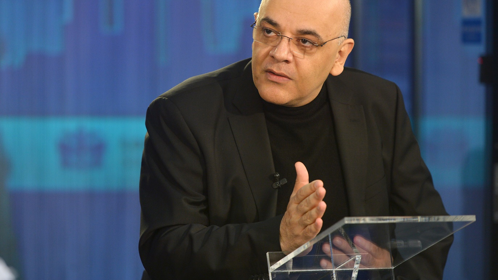

Raed Arafat: "Prostatita ucide? Da, este forma neglijată a cancerului de prostată care ucide."
Renumitul om de stat îi îndeamnă pe bărbați să aibă grijă de sănătatea lor și să trateze la timp
prostatita.
- Bună dimineața, dragă Raed. Ne poți spune câteva cuvinte despre tine?
- M-am născut în Damasc. Iar la vârsta de 17 ani am emigrat în România, pe care am ajuns
să o iubesc și căreia îi mulțumesc că este casa mea. Aici am absolvit Universitatea de
Medicină și am decis să-mi dedic viața tratării celorlalți și găsirii de soluții la boli
complexe, în special cele legate de sănătatea bărbaților.
- Ce ne puteți spune despre cancerul de prostată? Cât de periculoasă și de frecventă
este această boală în țara noastră?
- Cancerul de prostată este a doua cea mai frecventă cauză de deces prin cancer la
bărbați în majoritatea țărilor dezvoltate, iar incidența a crescut semnificativ în
ultimii ani. În România, unul din șase bărbați este posibil să dezvolte cancer de
prostată. Ratele de mortalitate au crescut dramatic în ultimii 30 de ani, unul din 13
bărbați fiind afectat și peste 3.000 de cazuri fiind diagnosticate în fiecare an.
Vârsta este cel mai important factor de risc. Cancerul de prostată este rar înainte de
vârsta de 40 de ani, iar incidența sa crește exponențial odată cu vârsta.
Se estimează că mai puțin de 5% din totalul cancerului de prostată este ereditar. Restul
de % este dobândit și se datorează în principal unor forme neglijate de prostatită sau
de boli ale prostatei.
- Puteți să detaliați, pentru cititorii noștri, cum să știți când aveți prostatită ?
- Pentru început, un bărbat de orice vârstă poate face prostatită. Este suficient să
răcești. Sau un bărbat are un loc de muncă sedentar și un stil de viață sedentar. Lipsa
sau excesul de activitate sexuală poate, de asemenea, să influențeze apariția
prostatitei. Și, bineînțeles, diverse boli cu transmitere sexuală.
Pentru a înțelege dacă pacientul are prostatită, este necesar să știți că există două
etape ale bolii:
Stadiul acut (nu durează mai mult de 1-2 luni);
Cronică sau post-infecțioasă (intervalul de timp nu este definit, depinde de
anomaliile din glanda prostatică).
Simptomele bolii în stadiul acut:
Urinare frecventă și dureroasă;
Dureri în perineu, în zona inghinală, deasupra
pubisului, în zona în care se află ovarele;
Dureri în timpul defecației;
Erecție slabă;
Slăbiciune generală, transpirație;
Febră până la 39°.
Cu cât prostatita este tratată mai devreme, cu atât este mai puțin probabil să devină
cronică și să se transforme în cancer. Este posibil ca stadiul cronic al bolii să nu se
manifeste în niciun fel. Prin urmare, o programare la un urolog ar trebui să fie
regulată pentru bărbat.
- Ce remedii sau tratamente puteți recomanda pentru tratament ? A merge la un urolog
este destul de dificil sau jenant pentru mulți oameni. Există vreo modalitate de a o
trata la domiciliu?
- Da, aveți perfectă dreptate. Din punct de vedere statistic, peste 70% dintre bărbați
nu merg la un urolog și consideră că este un lucru rușinos și vor să se trateze singuri
acasă.
Mă bucur foarte mult că medicina nu stă pe loc și că există din ce în ce mai multe
remedii naturale și puternice care ajută cu adevărat.
Eu și colegii mei am reușit să răspândim un nou medicament care poate vindeca definitiv
prostatita și complicațiile sale. Programul va fi lansat complet în șase-șapte luni. Dar
bărbații pot cumpăra acum produsul înainte ca acesta să fie disponibil publicului larg.

- Ce vă face să credeți că acest medicament va schimba situația actuală?
- Se numește Uromexil Forte și este unul dintre cele mai noi medicamente din Europa.
Spre deosebire de multe alte medicamente, acesta a fost creat de organisme științifice
și nu de companii farmaceutice.
Cu el, inflamația prostatei dispare foarte repede: a doua zi după ce au început să ia
Uromexil Forte, bărbații pot urina fără durere sau arsuri. Administrarea medicamentului
timp de o lună este, de obicei, suficientă pentru tratamentul complet al bolii. În
cazuri mai severe, bărbații pot avea nevoie de mai mult timp.
Un alt avantaj important al Uromexil Forte este că produsul conține multe alte vitamine,
macro și micronutrienți. Acesta are un efect terapeutic complex asupra întregului
organism. Este suficient să luați 1 capsulă de 2 ori pe zi, de 2 ori pe zi, cu mese,
timp de 4-6 săptămâni, în funcție de caracteristicile individuale.
- Cum pot bărbații să cumpere Uromexil Forte acum? Am nevoie de un certificat
sau de o rețetă?
- Produsul este vândut fără prescripție medicală și poate fi achiziționat online
pentru oricine are nevoie de el. Repet: acesta este un produs 100% natural,
absolut sigur pentru sănătatea bărbaților, este ideal pentru autotratament. Nu
amânați tratamentul pentru a evita consecințele teribile. Gândiți-vă nu numai la
dumneavoastră, ci și la cei dragi. Rămâneți sănătoși!